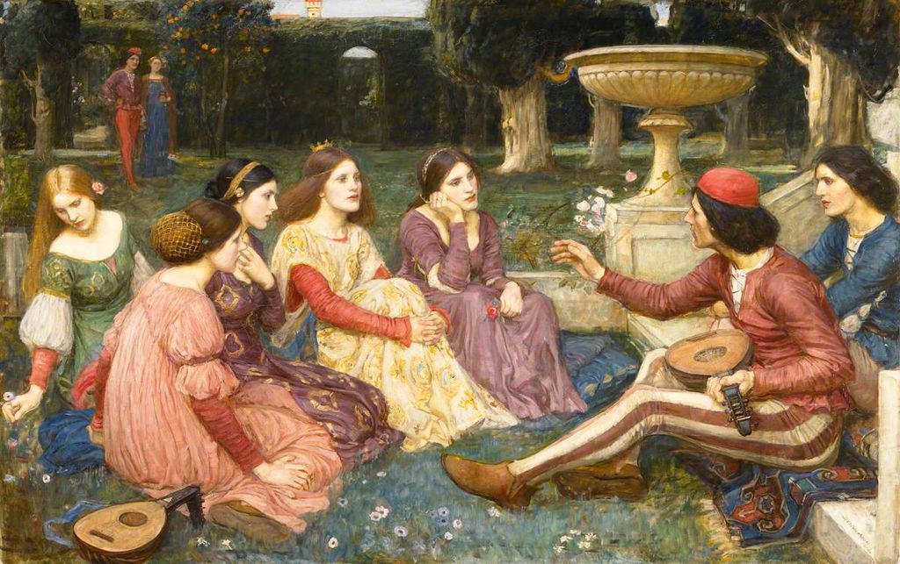

<head>
<meta charset="UTF-8" />
<meta name="keywords" content="drawing, painting" />
<meta name="description" content="drawings by Sunjy" />
<title>Sunjy</title>
<link rel="shortcut icon" type="image/x-icon" href="../../mImages/mCommon/favicon.ico" media="screen" />
<link rel="stylesheet" type="text/css" href="../../mCsses/mCommon/mCssA.css" />
<link rel="stylesheet" type="text/css" href="../../mCsses/mCommon/mCssB.css" />
<link rel="stylesheet" type="text/css" href="../../mCsses/mCommon/mCssC.css" />
<link rel="stylesheet" type="text/css" href="../../mCsses/mCommon/mCssD.css" />
<link rel="stylesheet" type="text/css" href="../../mCsses/mContent/mCssA.css" />
<link rel="stylesheet" type="text/css" href="../../mCsses/mContent/mCssB.css" />
<link rel="stylesheet" type="text/css" href="../../mCsses/mContent/mCssC.css" />
<link rel="stylesheet" type="text/css" href="../../mCsses/mContent/mCssD.css" />
</head>
<script type="text/javascript" src="../../mScripts/mContent/mContentAA.js" /></script>
<script type="text/javascript" src="../../mScripts/mContent/mContentAB.js" /></script>
<script type="text/javascript" src="../../mScripts/mContent/mContentAC.js" /></script>
<script type="text/javascript" src="../../mScripts/mContent/mContentAD.js" /></script>
<script type="text/javascript"></script> 
<script type="text/javascript">
document.write('<div class="mImgAbsolute"></div>');
/*
document.write('<p class="mFontSizeBColor" />From a white paper...</p>');
document.write('<table class="center"><tr><td>');
document.write('');
document.write('</td></tr></table>');
*/
</script>


<script type="text/javascript">
document.write('<p class="mFontSizeBColor" />A Tale from the Decameron</p>');
document.write('<p class="mFontSizeSColor" />“A Tale from the Decameron” by John William Waterhouse depicts a scene from Boccaccio’s Decameron. The Decameron contains a collection of 100 tales told by a group of seven young women and three young men who are sheltering in a secluded villa just outside Florence to escape the Black Death of 1348.<br><br>In Italy, during the time of the Black Death, ten young people flee from plague-ridden Florence to a deserted villa in the countryside for two weeks.<br><br>To pass the days, each member of the party tells a story, except for one day per week for chores, and the Sunday during which they do no work at all.<br><br>This process resulted in ten nights of storytelling for two weeks. Thus, by the end of the fortnight, they have told 100 stories.<br><br>Each of the ten young people was, in turn, anointed as King or Queen for one of the ten days. This responsibility included choosing the theme of the stories for that day. Examples of topics for the day included:<br>•examples of the power of fortune;<br>•examples of the power of human will;<br>•love tales that end tragically;<br>•love tales that end happily;<br>•witty replies that save the speaker;<br>•tricks that women play on men;<br>•tricks that people play on each other in general; and<br>•examples of virtue.<br><br>The basic plots of the stories include mocking the lust and greed of the clergy, tensions in Italian society between the new wealthy commercial class and noble families, and the perils and adventures of traveling merchants.<br><br>Waterhouse composition shows two of the young men on the steps and five of the young women listening to one of the stories from the man with the red hat.<br><br>The women seem captivated by the story and the performance of the young storyteller with his string musical instrument. A couple is shown in the gardens heading to the storytelling session.<br><br>The various tales of love range from the erotic to the tragic. Stories of wit, practical jokes, and life lessons contribute to the overall structure of the stories.<br><br>The opulence of their clothing and their secluded villa in the painting reflects the aristocratic values of the emerging Florentine merchant class who could afford to quarantine their children from the Black Death that plagued the crowded cities.<br><br>The Decameron<br><br>The Decameron, also nicknamed “the Human Comedy,” is a collection of novellas by the 14th-century Italian Giovanni Boccaccio (1313–1375).<br><br>The Decameron is structured as a frame story containing 100 tales told by a group of ten young people in seclusion from the Black Death, which was afflicting the city.<br><br>Boccaccio conceived of The Decameron after the epidemic of 1348. In addition to its literary value and widespread influence, it provides a document of life at the time.<br><br>The Decameron is written in the vernacular of the Florentine language, and it is considered a masterpiece of classical early Italian prose.<br><br>Frame Story<br><br>A frame story, also known as a frame narrative, is a literary technique that serves as a companion piece to a selection of sub-stories. An introductory description sets the stage for a set of shorter stories.<br><br>The frame story leads readers from a first story into one or more other stories within it.<br><br>This framing device is a common literary technique that started in ancient Egypt and Indian literature. This form gradually spread west through the centuries.<br><br>It became popular, giving rise to such classic frame tale collections as the One Thousand and One Nights (Arabian Nights), The Decameron, and Canterbury Tales.<br><br>This format had flexibility in that various narrators could retain the stories they liked or understood, while dropping ones they didn’t and adding new ones they heard from other places.<br><br>This flexibility occurred with One Thousand and One Nights, where different versions over the centuries have included different stories.<br><br>A frame story in the context of the telling of sub-stories is also a technique with a long history, dating back at least to the beginning section of the Odyssey.<br><br>Black Death<br><br>The Black Death, also known as the Bubonic Plague, was the most devastating pandemic recorded in human history, resulting in the deaths of an estimated 75 to 200 million people, peaking in Europe from 1347 to 1351.<br><br>The Black Death was the first major European outbreak of the plague. The plague created several religious, social, and economic upheavals, with profound effects on the course of European history.<br><br>The Black Death probably originated in Asia, from where it traveled along the Silk Road, reaching Crimea by 1343.<br><br>From there, it was carried by fleas living on the black rats that went on merchant ships, spreading throughout the Mediterranean, reaching the rest of Europe via the Italian peninsula.<br><br>The Black Death is estimated to have killed 30% to 60% of Europe’s population. It took 200 years for Europe’s population to recover to its previous level. Some regions, such as Florence, only recovered by the 19th century.<br></p>');
document.write('<table class="center" /><tr><td>');
document.write('<br>In Italy, during the time of the Black Death, ten young people flee from plague-ridden Florence to a deserted villa in the countryside for two weeks.<br><br>To pass the days, each member of the party tells a story, except for one day per week for chores, and the Sunday during which they do no work at all.<br><br>This process resulted in ten nights of storytelling for two weeks. Thus, by the end of the fortnight, they have told 100 stories.<br><br>Each of the ten young people was, in turn, anointed as King or Queen for one of the ten days. This responsibility included choosing the theme of the stories for that day. Examples of topics for the day included:<br>•examples of the power of fortune;<br>•examples of the power of human will;<br>•love tales that end tragically;<br>•love tales that end happily;<br>•witty replies that save the speaker;<br>•tricks that women play on men;<br>•tricks that people play on each other in general; and<br>•examples of virtue.<br><br>The basic plots of the stories include mocking the lust and greed of the clergy, tensions in Italian society between the new wealthy commercial class and noble families, and the perils and adventures of traveling merchants.<br><br>Waterhouse composition shows two of the young men on the steps and five of the young women listening to one of the stories from the man with the red hat.<br><br>The women seem captivated by the story and the performance of the young storyteller with his string musical instrument. A couple is shown in the gardens heading to the storytelling session.<br><br>The various tales of love range from the erotic to the tragic. Stories of wit, practical jokes, and life lessons contribute to the overall structure of the stories.<br><br>The opulence of their clothing and their secluded villa in the painting reflects the aristocratic values of the emerging Florentine merchant class who could afford to quarantine their children from the Black Death that plagued the crowded cities.<br><br>The Decameron<br><br>The Decameron, also nicknamed “the Human Comedy,” is a collection of novellas by the 14th-century Italian Giovanni Boccaccio (1313–1375).<br><br>The Decameron is structured as a frame story containing 100 tales told by a group of ten young people in seclusion from the Black Death, which was afflicting the city.<br><br>Boccaccio conceived of The Decameron after the epidemic of 1348. In addition to its literary value and widespread influence, it provides a document of life at the time.<br><br>The Decameron is written in the vernacular of the Florentine language, and it is considered a masterpiece of classical early Italian prose.<br><br>Frame Story<br><br>A frame story, also known as a frame narrative, is a literary technique that serves as a companion piece to a selection of sub-stories. An introductory description sets the stage for a set of shorter stories.<br><br>The frame story leads readers from a first story into one or more other stories within it.<br><br>This framing device is a common literary technique that started in ancient Egypt and Indian literature. This form gradually spread west through the centuries.<br><br>It became popular, giving rise to such classic frame tale collections as the One Thousand and One Nights (Arabian Nights), The Decameron, and Canterbury Tales.<br><br>This format had flexibility in that various narrators could retain the stories they liked or understood, while dropping ones they didn’t and adding new ones they heard from other places.<br><br>This flexibility occurred with One Thousand and One Nights, where different versions over the centuries have included different stories.<br><br>A frame story in the context of the telling of sub-stories is also a technique with a long history, dating back at least to the beginning section of the Odyssey.<br><br>Black Death<br><br>The Black Death, also known as the Bubonic Plague, was the most devastating pandemic recorded in human history, resulting in the deaths of an estimated 75 to 200 million people, peaking in Europe from 1347 to 1351.<br><br>The Black Death was the first major European outbreak of the plague. The plague created several religious, social, and economic upheavals, with profound effects on the course of European history.<br><br>The Black Death probably originated in Asia, from where it traveled along the Silk Road, reaching Crimea by 1343.<br><br>From there, it was carried by fleas living on the black rats that went on merchant ships, spreading throughout the Mediterranean, reaching the rest of Europe via the Italian peninsula.<br><br>The Black Death is estimated to have killed 30% to 60% of Europe’s population. It took 200 years for Europe’s population to recover to its previous level. Some regions, such as Florence, only recovered by the 19th century.<br>" />');
document.write('</td></tr></table>');
</script>


